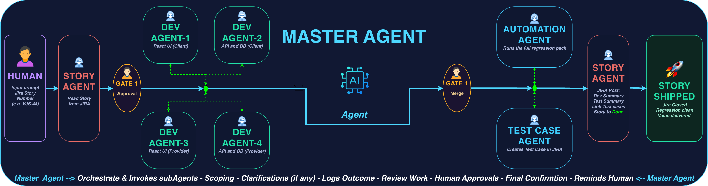
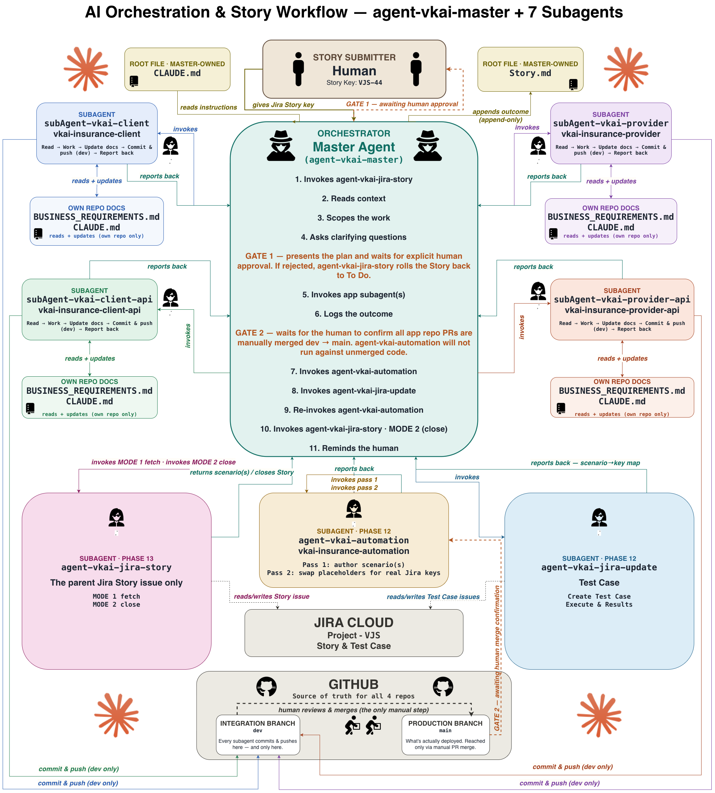
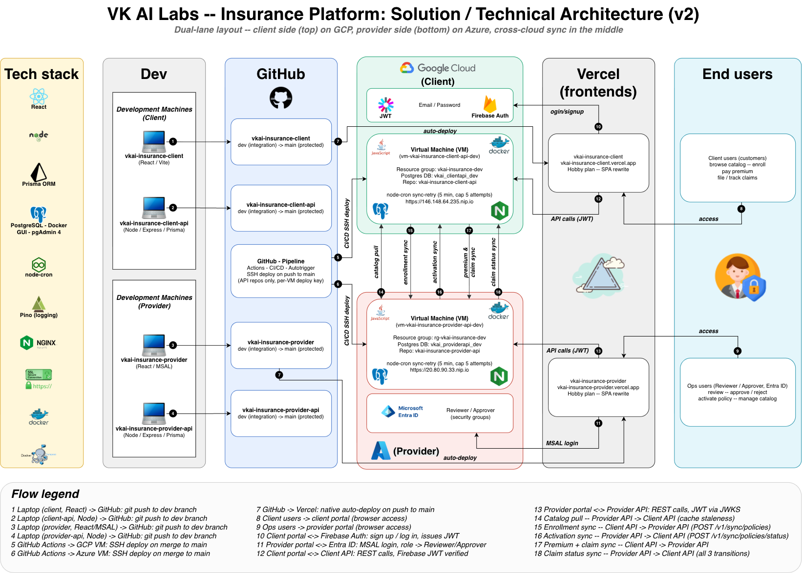
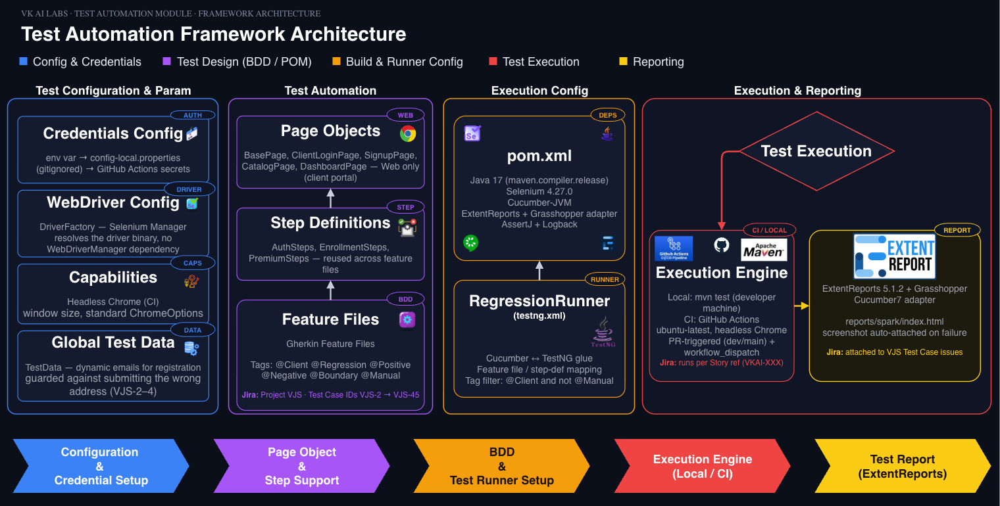
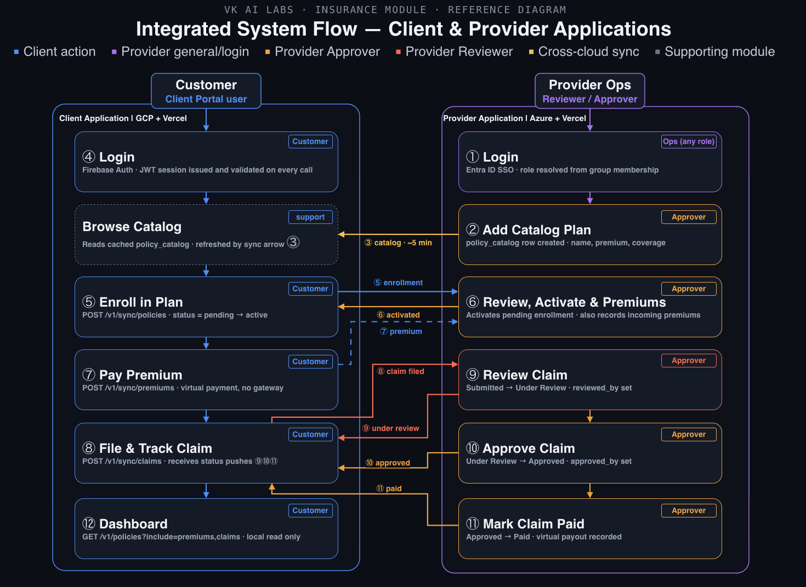

VK AI LABS · E2E ENGINEERING PLATFORM
Engineered by Human Direction, Built by AI Orchestration
A dual-cloud insurance platform where a master AI agent orchestrates six specialized subagents — from architecture to production — verified live across GCP and Azure.
- React
- Node.js
- PostgreSQL
- Docker
- GCP
- Azure
- GitHub Actions

VK AI LABS · E2E ENGINEERING PLATFORM
MULTI-AGENT ORCHESTRATION · SOLUTION ARCHITECTURE · TEST AUTOMATION FRAMEWORK · SYSTEM FLOW
One Platform, End to End — Orchestrated, Architected, Tested & Shipped via AI Agents.




VK AI LABS · E2E ENGINEERING PLATFORM
RETRIEVAL-AUGMENTED GENERATION
Grounded Answers. Real Docs. No Guessing.
1
Chunk & Index
Done once, offline — not per question
352 real doc sections
→
Split by heading (chunked)
→
BM25 sparse index — flat JSON, no vector DB
2
Retrieve
Runs live, on every question
User question
→
Tokenize (stopword-filtered)
→
BM25-scored against the index
→
Top-6 relevant chunks
3
Augment
Build a richer prompt from what was retrieved
Top-6 chunks
+
User question
→
Augmented prompt (numbered context blocks)
4
Generate
Claude answers only from the retrieved context
Augmented prompt
→
Claude Sonnet 4.6
→
Answer
Answers are generated only from this project's own documentation — 352 real chunks, retrieved live via BM25 (no vector DB).